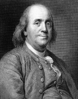

On sekizinci yüzyılın en ünlü ve en etkili Amerikalıları’ndan biri olan Benjamin Franklin (1706-1790), bir mucit, diplomat, gazeteci ve devlet adamıydı. Hem Bağımsızlık Bildirgesi’ni hem de Birleşik Devletler Anayasası’nı imzalayanlardan biriydi. Uzun ömrü boyunca –Püritenler tarafından yönetildiği zamanlarda Boston’da doğdu ve sanayi devriminin arefesinde, Philadelphia’da öldü–
Franklin, genç Birleşik Devletler’in kültürel ve siyasi yaşamına muhtemelen herhangi bir çağdaşından daha fazla katkıda bulunmuştur. Franklin, elektriğin bulunmasına yardım etmiş, başarılı bir gazete yayınlamış ve Franklin sobasını icat etmiştir. John Adams’ın yazdığı üzere zamanındaki şöhreti “Newton, Büyük Frederick veya Voltaire’inkinden daha büyüktü, karakteriyse hepsinden daha saygı değerdi”. Bazı tarihçiler, onu “İlk Amerikalı” olarak anmıştır.

Franklin, on yedinci yüzyılda Boston’a göç eden bir mum imalatçısı olan Josiah Franklin’in on beşinci çocuğudur. On iki yaşındayken Franklin, bir gazete yayıncısı olan ağabeylerinden birinin yanında çalışmaya gitti. Görevi, işin matbaa kısmındaydı, ama pek yakında gazete için makaleler yazacaktı. Kıymet bilmez ağabeyi için çalışmaktan yorulan Franklin, on yedi yaşında güneye, Philedelphia’ya taşındı. Philadelphia’da Franklin, gazete ve mizahi kitaplar yayınladı, nihayetinde şehrin en ünlü fertlerinden biri oldu. Bitmez tükenmez bir yetenek ve merak insanı olan Franklin, tümü de bugün ayakta olan bir hastane, bir sigorta şirketi, bir felsefe topluluğu ve bir üniversite (şimdiki Pennsylvania Üniversitesi) kurdu. Nihayetinde yayıncılık işinden emekli oldu ve kendini bilime verdi. Franklin, elektriğin özelliklerinin keşfine yardımcı oldu, çift odaklı gözlük camını ve enerji tasarruflu Franklin sobasını icat etti.
1750’ler ve 60’larda, sömürgelerin İngiliz hâkimiyetinden yorulmaya başladığı zamanlarda, Franklin İngiltere’de yaşıyordu. Parlamentodan önce, Amerikalılar’ın görüşlerinin temsil edilmesine yardımcı olmaya çalıştı. Franklin, İngiltere sömürgelerinin özgürleşmeleri gerektiğini ikna edici bir şekilde savunarak Londra’dan ayrıldı. 1776’da memleketi Philadelphia’da Bağımsızlık Bildirgesi’ni imzaladı. Franklin, bilimsel keşiflerinden dolayı bir şöhret olduğu Fransa’da, henüz acemi olan Birleşik Devletleri’ni temsil etmek üzere Avrupa’ya döndü. Pek çok Avrupalı’nın gözünde bu genç ulus, büyük bilim insanıyla özdeşleşerek güvenilirlik kazandı. Franklin, Pennsylvania’ya geri döndü ve neredeyse, seksen dört yaşında öldüğü güne kadar çalışmaya devam etti.
EK BİLGİ:
1. Franklin’in keşiflerinden biri de camdan yapılan, armonika olarak bilinen müzikal bir enstrümandı. On dokuzuncu yüzyılda popülaritesinin azalmasından önce, büyük Avusturyalı besteci Wolfgang Amadeus Mozart, Franklin’in icadı için iki beste yapmıştır.